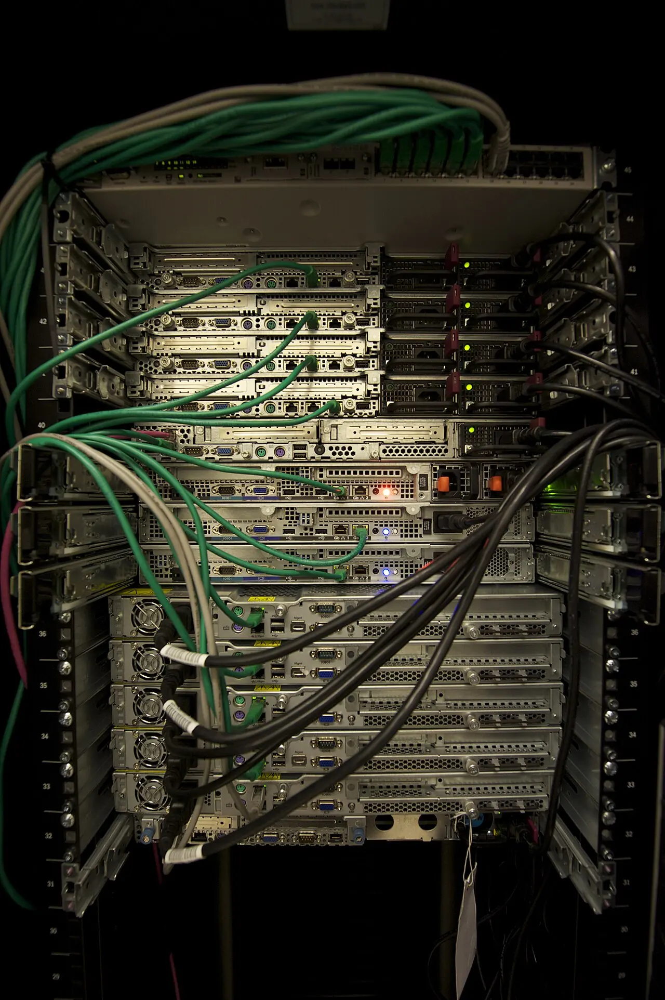

AI 데이터센터 투자는 서버와 GPU 이야기로 시작하지만, 실제 현장에서는 전력 접속이 먼저 병목이 됩니다. 고성능 서버는 많은 전기를 지속적으로 쓰고, 냉각 장비와 예비 전원까지 포함하면 한 시설이 작은 도시처럼 전력을 요구할 수 있습니다. IEA도 2026년 전력 전망에서 AI와 데이터센터가 전력 수요 증가의 중요한 축이 되고 있다고 설명합니다. 이제 데이터센터는 IT 산업이면서 동시에 전력 산업입니다.
기업이 좋은 부지를 찾아도 전력망 접속이 늦어지면 착공과 가동 일정은 밀립니다. 송전선, 변전소, 배전망, 전력 구매계약, 냉각수, 지역 주민 협의가 모두 필요합니다. GPU를 주문하는 일보다 전력 인프라를 맞추는 일이 더 오래 걸릴 수 있습니다. 그래서 데이터센터 산업을 볼 때는 서버 공급보다 전력 접속 가능 시간을 먼저 확인해야 합니다.
전력 접속이 착공을 가릅니다

데이터센터는 전기를 많이 쓰는 정도를 넘어 안정적으로 써야 합니다. 정전이 생기면 서비스 장애가 바로 발생하기 때문에 전력 품질과 이중화가 중요합니다. 전력망이 이미 빡빡한 지역에서는 새로운 데이터센터를 연결하려면 송전망 보강과 변전 설비 증설이 필요합니다. 이 과정은 인허가와 공사 기간을 요구합니다.
전력 접속 대기 시간이 길어지면 사업성은 달라집니다. 서버를 빨리 들여와도 전기가 없으면 매출이 나오지 않습니다. 클라우드 고객과 맺은 계약 일정도 흔들립니다. 데이터센터 투자 발표를 볼 때 부지 면적과 서버 규모만 볼 것이 아니라 전력 확보 방식, 접속 시점, 전력 구매계약의 기간과 가격을 확인해야 합니다.
냉각은 비용이자 민원입니다
AI 서버는 열을 많이 냅니다. 공랭식으로 감당하기 어려운 밀도가 늘어나면서 액침 냉각, 직접 액체 냉각, 고효율 냉동기 같은 기술이 주목받습니다. 냉각은 단순한 설비 선택이 아니라 전기 사용량과 물 사용량, 유지보수 인력, 소음 문제와 연결됩니다. 지역 주민 입장에서는 데이터센터가 일자리보다 전기요금과 소음, 물 사용 부담으로 보일 수 있습니다.
냉각 방식에 따라 부지 선택도 달라집니다. 기후가 서늘한 지역은 냉각 비용을 줄일 수 있지만 네트워크 지연과 고객 접근성이 문제가 될 수 있습니다. 물을 많이 쓰는 냉각 방식은 가뭄 지역에서 반발을 키울 수 있습니다. 데이터센터는 서버를 넣는 상자가 아니라 지역 자원과 계속 협상하는 시설입니다.
지역 비용은 누가 부담하나
데이터센터가 지역 전력 수요를 크게 늘리면 송전망과 발전 설비 확충 비용을 누가 부담할지가 쟁점이 됩니다. 기술 기업이 필요한 인프라 비용을 직접 부담해야 한다는 주장과, 지역 경제 활성화를 위해 일부 공공 투자가 필요하다는 주장이 부딪힙니다. 전기요금이 오르면 주민과 중소기업은 데이터센터의 혜택보다 비용을 먼저 느낄 수 있습니다.
좋은 산업 정책은 투자 유치와 지역 부담을 함께 봐야 합니다. 세금 감면만으로 데이터센터를 끌어오면 나중에 전력망 보강 비용이 남을 수 있습니다. 반대로 모든 비용을 기업에 떠넘기면 투자가 다른 지역으로 이동할 수 있습니다. 핵심은 전력 사용량, 일자리, 세수, 인프라 비용을 투명하게 공개하고 계약하는 것입니다.
효율은 수요를 지우지 못합니다
AI 모델과 칩의 효율은 빠르게 좋아지고 있습니다. 같은 작업에 필요한 전력은 줄어들 수 있습니다. 그러나 사용량이 더 빠르게 늘면 전체 전력 수요는 줄지 않습니다. 검색, 코딩, 영상 생성, 기업 자동화, 로봇, 과학 계산까지 AI 활용이 넓어지면 효율 개선은 수요 증가에 흡수될 수 있습니다. 산업에서는 이를 반동 효과처럼 봐야 합니다.
데이터센터 경쟁은 앞으로 GPU 확보와 전력 확보가 함께 가는 구조가 될 것입니다. 클라우드 기업은 칩뿐 아니라 변전소, 장기 전력계약, 냉각 기술, 지역 협상 능력을 갖춰야 합니다. 전력회사는 새로운 대형 고객을 얻지만 동시에 피크 부담과 투자 부담을 떠안습니다. AI 데이터센터 산업의 진짜 병목은 서버실 안보다 전력망 입구에서 먼저 나타납니다.
AI 데이터센터 투자는 서버 구매 계약만으로 판단하기 어렵습니다. GPU를 확보해도 전력 인입이 늦어지면 건물은 비어 있고, 변전 설비와 냉각 시스템이 준비되지 않으면 랙 밀도를 올릴 수 없습니다. 지역 주민이 전기요금과 물 사용을 걱정하면 인허가도 느려집니다. 그래서 데이터센터 산업의 병목은 기술 부족이 아니라 지역 전력망, 토지, 냉각수, 송전 일정, 전력구매계약이 한데 묶인 현실 문제로 나타납니다.
기업 입장에서는 전력 단가가 곧 경쟁력입니다. 같은 AI 모델을 돌려도 전기요금, 냉각 효율, 서버 가동률, 네트워크 지연이 다르면 원가가 달라집니다. 클라우드 회사가 장기 전력 계약을 맺고 재생에너지와 원전, 가스 발전까지 검토하는 이유도 여기에 있습니다. 앞으로의 데이터센터 뉴스는 몇 조 원 투자 발표보다 실제 착공 시점, 전력 접속 승인, 지역 보상, 서버 가동률을 함께 읽어야 합니다.
지역 경제 효과도 숫자를 나눠 봐야 합니다. 건설 기간에는 일자리가 늘어날 수 있지만, 운영 단계의 상시 고용은 생각보다 적을 수 있습니다. 대신 전력 설비와 통신망, 냉각 인프라가 지역 산업의 기반이 될 수도 있습니다. 주민이 체감할 이익과 부담을 구체적으로 공개하지 않으면 데이터센터는 미래 산업이라는 이름과 별개로 갈등 시설이 됩니다. 투자 발표보다 지역과 맺은 전력·환경·고용 약속이 오래 남는 이유입니다.
운영 효율을 보여주는 지표도 더 많이 공개될 필요가 있습니다. 전력사용효율, 물 사용량, 폐열 활용 여부, 장비 교체 주기, 장애 대응 시간이 공개될수록 지역과 투자자의 판단이 쉬워집니다. AI 데이터센터는 겉으로는 조용한 건물이지만 내부에서는 막대한 전력과 자본이 계속 흐릅니다. 이 산업이 지속 가능하려면 빠른 증설뿐 아니라 얼마나 적은 낭비로 안정적인 연산을 제공하는지가 경쟁력이 됩니다.
투자와 정책을 평가할 때는 “얼마나 큰 데이터센터인가”보다 “어떤 전기로 얼마나 안정적으로 운영되는가”를 물어야 합니다. AI 인프라의 속도는 칩의 납기만큼 전력망의 속도에 달려 있습니다.